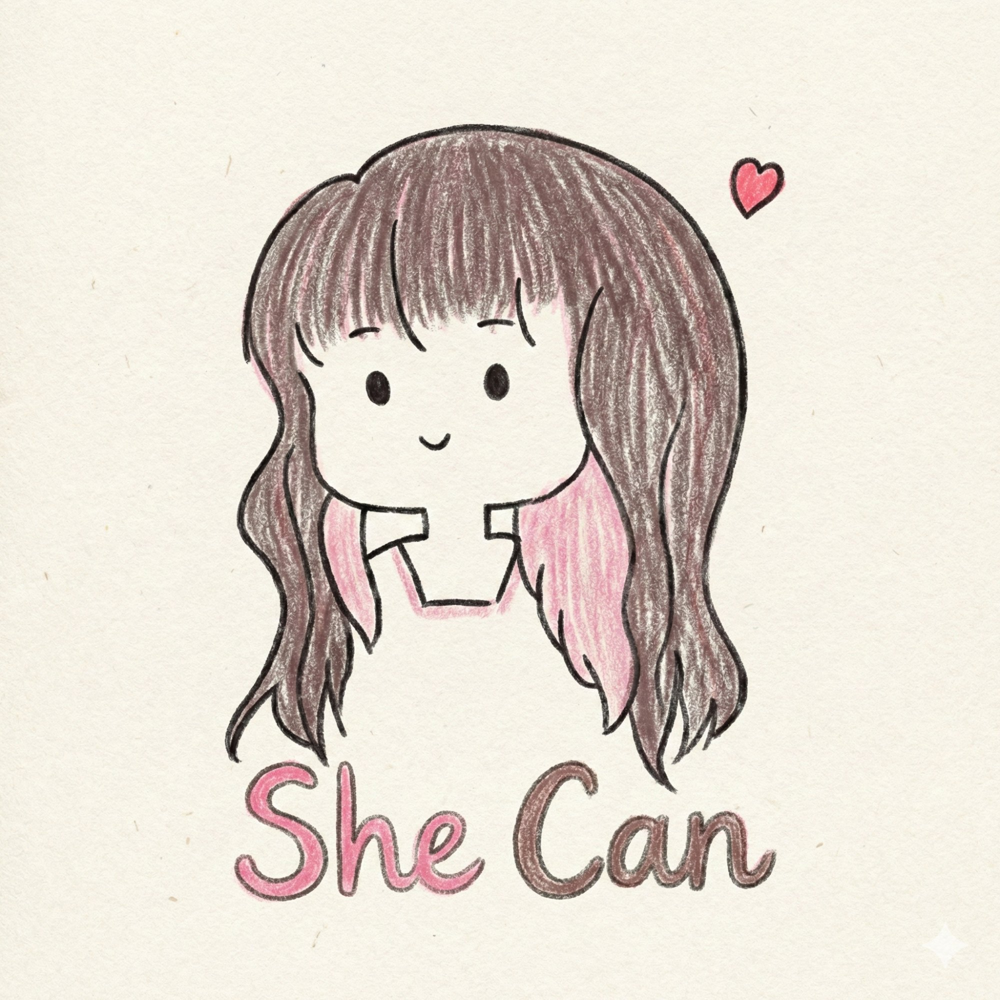

PhD candidate, Graduate School of Engineering, Department of Civil Engineering, the University of Tokyo — Human and Urban Informatics (Sekimoto Lab).
My research sits at the intersection of urban systems and human behavior — where the city is not just a physical backdrop, but an active force shaping how people move, decide, and live.
Beyond research, I build products for everyday users and create content on social media, turning research insights into something real and accessible.
If you're interested in cities, data, or AI products — or just have some idea you want to talk through — feel free to reach out.
By integrating a causal inference layer into an Agent-Based Model, my research aims to enhance activity sequence models within urban digital twin platforms — simulating counterfactual changes in discretionary activity behavior in response to shifts in urban facilities.
Technical notes on causal inference, machine learning, and urban data science.
Fragments of life in Japan—stress, loneliness, sparks of inspiration, and searching for meaning on the academic path.
✦ Rednote (Xiaohongshu) · Coconut Planet’s first PhD →
没头脑，但挺高兴的实干家 ·peace & love & fun & street smart
Open to research collaborations, and AI products.